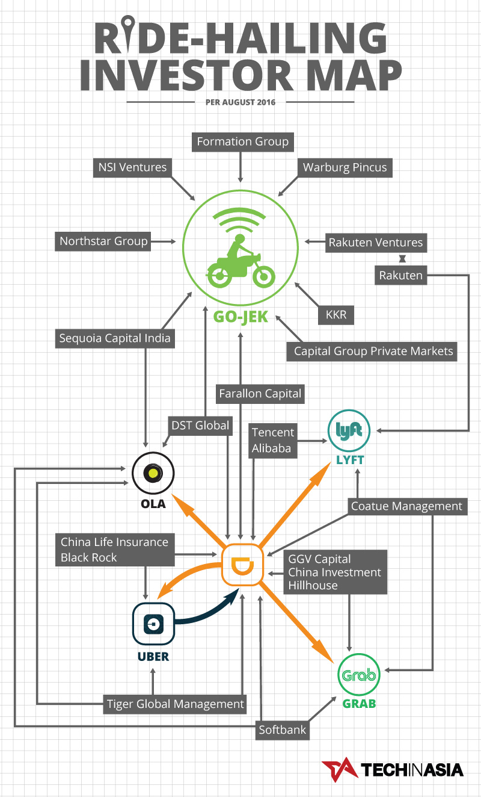

Hacktiv8 News Portal
Comprehensive & Proven
Oleh Ryan Andhaka
Oleh Ryan Andhaka
GO-JEK akhirnya resmi mengumumkan pendanaan terbaru mereka yang bernilai US$550 juta (sekitar Rp7,2 triliun). Pendanaan tersebut mereka terima dari KKR, Warburg Pincus, Farallon Capital, dan Capital Group Private Markets. Investor GO-JEK sebelumnya, Sequoia India, Northstar Group, DST Global, NSI Ventures, Rakuten Ventures, dan Formation Group, juga ikut berpartisipasi dalam pendanaan ini.
Dana segar ini akan digunakan GO-JEK untuk mengembangkan jangkauan dan kualitas dari layanan-layanan mereka. Dalam pernyataan resminya, GO-JEK juga menyebut kemungkinan untuk menghadirkan layanan mereka di luar Indonesia.
Saat ini, GO-JEK telah mempunyai 200.000 mitra pengemudi sepeda motor dan mobil, serta lebih dari 3.000 penyedia jasa di platform mereka. GO-JEK pun mengklaim kalau mereka menerima lebih dari 20 juta pesanan sepanjang bulan Juni 2016 yang lalu.
Dengan valuasi sebesar US$66 miliar (sekitar Rp867 triliun), Uber jelas merupakan penguasa bisnis transportasi on demand di dunia. Hal ini kemudian memicu munculnya sebuah aliansi anti Uber yang digagas oleh para penyedia layanan transportasi online lainnya, yaitu Didi Chuxing, Ola, Grab, dan Lyft.
Dengan pendanaan besar yang menjadikan mereka sebagai Unicorn pertama dari Indonesia ini, GO-JEK jelas bisa memainkan peran penting dalam perseteruan para penyedia layanan transportasi online tersebut. Mengingat pertarungan yang sengit antara GO-JEK dan Uber di tanah air, tak mustahil kalau kemudian GO-JEK akan bergabung dengan aliansi anti Uber.
GO-JEK sendiri punya kedekatan dengan aliansi tersebut. Sequoia India dan DST Global, dua investor GO-JEK, juga merupakan investor di Ola. DST Global pun punya saham di Didi Chuxing, sang pemimpin dari aliansi anti Uber. Setelah mendapatkan investasi terbaru, GO-JEK pun makin dekat dengan aliansi anti Uber. Farallon Capital, investor terbaru mereka, juga merupakan investor di Didi Chuxing.
Kamu bisa melihat peta investor layanan transportasi on-demand dunia pada ilustrasi berikut:
Apa ini artinya GO-JEK akan segera bergabung dengan aliansi anti Uber? Sepertinya tidak.
Keberadaan Grab di aliansi anti Uber merupakan alasan utama mengapa kecil kemungkinan GO-JEK akan bergabung dengan aliansi tersebut. Selain bersaing dalam bisnis, Nadiem Makarim juga punya konflik personal dengan Anthony Tan, CEO Grab. Mereka bahkan tidak saling berbicara satu sama lain.
Seperti ingin menguatkan dukungan ke sekutunya, Didi Chuxing baru-baru ini pun memberikan dana segar sebesar US$600 juta untuk Grab. Investasi ini tentu menempatkan Didi Chuxing dan aliansi anti Uber sebagai “musuh” dari GO-JEK.
Hal lain yang menjadi alasan mengapa kecil kemungkinan kalau GO-JEK akan bergabung dengan aliansi anti Uber adalah perbedaan strategi mereka dengan para anggota aliansi tersebut. Ketika semua anggota aliansi anti Uber fokus mengembangkan layanan transportasi mobil, GO-JEK justru terlambat meluncurkan layanan berbasis mobil.
Berawal dari menyediakan transportasi on demand dengan sepeda motor, GO-JEK justru mengembangkan bisnis mereka dengan menghadirkan layanan kurir dan pengantaran makanan. Mereka kemudian melanjutkannya dengan menyediakan layanan jasa seperti pembersih rumah dan pijat, hingga ke penjualan tiket bioskop.
Khusus untuk GO-FOOD, GO-JEK bahkan mengklaim kalau layanan pemesanan makanan tersebut merupakan yang terbesar kedua di dunia, setelah sebuah layanan serupa di Cina. Sejak diluncurkan, GO-FOOD telah melayani 15 juta pemesanan makanan, dengan total 35.000 restoran rekanan.
Perbedaan strategi ini mungkin menjadi alasan utama mengapa GO-JEK kemudian memilih KKR dan Warburg Pincus sebagai investor baru mereka. Kedua investor tersebut tidak punya kepentingan di perang layanan transportasi yang terjadi antara Uber dan aliansi anti Uber.
Hal ini jelas bisa memberikan kebebasan bagi GO-JEK untuk fokus dengan semua layanan yang mereka miliki saat ini, sehingga mereka tidak perlu ikut campur dengan pertarungan antara Uber dan aliasi penantangnya. Namun sekali lagi, tidak ada hal yang mustahil dalam bisnis.
Sumber: Techinasia